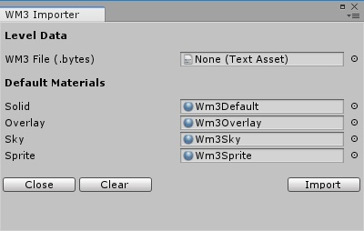

Wm3Util is a set of import scripts for the Unity Engine in order to load .wm3 files created by A3Tools.
A3Tools is a separate tool based on the Acknex8 engine, which converts Acknex3 raycaster levels to 3d meshes.
The .wm3 format was developed with Acknex8 use in mind, but it theoretically can be used in any engine.
As Acknex8 does not feature a WYSIWYG development environment, it is very tedious to refine .wm3 levels.
To overcome this, Wm3Util was developed, since Unity allows for more comfortable scene/level editing.
A3Tools is a converter for raycaster sector/wall based levels (similar to 1993 Doom) created with the Acknex3 engine.
This toolset is by far not completed, but still allows to convert many A3 levels (static only).
A3Tools can export .wm3 files and .bmp textures, which allows for import into pretty much any 3d engine of choice.
The .wm3 format was developed having usage in Acknex8 in mind, though. Format is documented in A3Tools manual.
A3Tools utilizes the Acknex8 engine to operate, Windows binaries are included. The A3Tools project can be obtained from Github: https://github.com/firoball/A3Tools
Since you have come here, I expect you are aware of Acknex3, Acknex8 and Unity.
Use this utility to pretty much whatever you want:
The Wm3 Importer panel will show up. Configuration must be done for template materials and level.

Drag any .wm3.bytes file of choice to the Wm3 Importer dialog.
The template materials can be found in Assets/Wm3Util/Materials. Drag them to the dialog as shown.
They are built in a way to imitate the Acknex3 look as close as possible. Customization is possible, though.
A sample project will be forked soon.
This was a Unity learning project for me and is finished as such.
Of course there are many improvements possible (like animated textures and player positioning),
but usually they also require an A3Tools and .wm3 format update.
This quickly adds up to a lot of work for little use. Acknex3 was not used very commonly at its time.
In case you are one of the very few former Acknex3 users and have a special request, feel free to contact me.
Wm3Util was developed and tested with Unity Version 2018.3.0f2 Personal.
Downwards compatibility was not tested.
Please respect license.txt (Attribution-NonCommercial 4.0 International)
- firoball
http://firoball.de